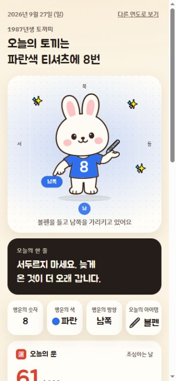
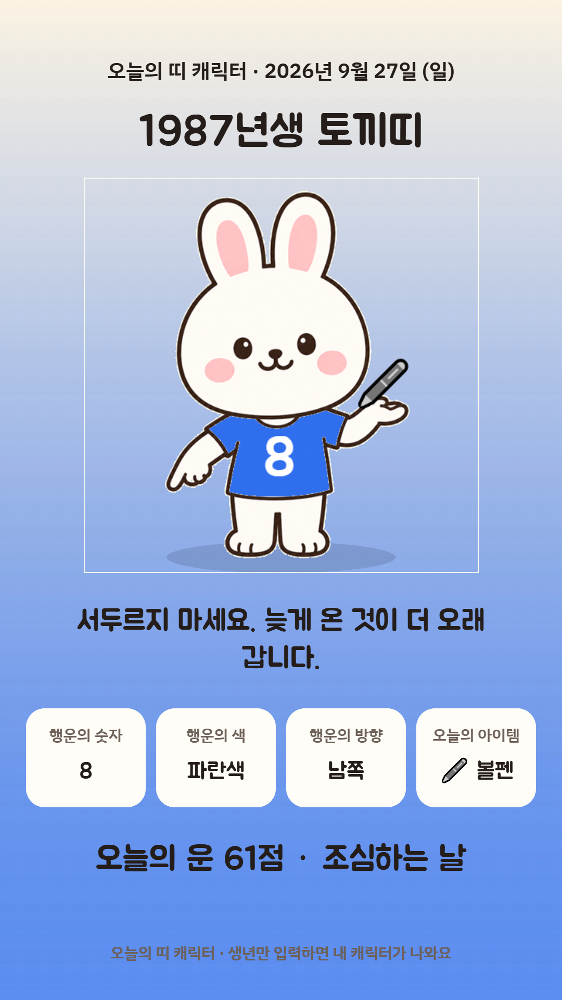

<!doctype html><html lang="ko"><meta charset="utf-8"><title>오늘의 띠 캐릭터 소개</title><style>
*{box-sizing:border-box}body{margin:0;background:#FFF8E9;color:#382A24;font-family:'Malgun Gothic',sans-serif;width:1504px;height:741px;overflow:hidden}.art{width:1504px;height:741px;display:flex;align-items:center;padding:64px 80px;gap:64px}.copy{width:575px;flex-shrink:0}.brand{font-size:25px;font-weight:700;color:#D9432F;letter-spacing:1px}.seal{display:inline-grid;place-items:center;background:#D9432F;color:#fff;border-radius:12px;width:44px;height:44px;margin-right:14px;font-size:28px}h1{font-size:58px;line-height:1.35;letter-spacing:-3px;margin:26px 0 22px;word-break:keep-all}p{font-size:25px;line-height:1.8;color:#6D5A4C;word-break:keep-all;margin:0}.tags{display:flex;gap:10px;margin:28px 0 42px}.tags span{border:1px solid #E8D6BA;border-radius:25px;padding:10px 18px;font-size:18px;background:#fffdf7}.note{font-size:16px;color:#897465}.screens{display:flex;align-items:center;gap:22px}.screen{width:291px;padding:9px;border:1px solid #E8D6BA;background:white;border-radius:25px;box-shadow:0 18px 35px #60402018;overflow:hidden}.screen img{display:block;width:100%;border-radius:17px}.card{width:260px;transform:rotate(4deg)}.caption{text-align:center;font-size:15px;line-height:1.4;margin-top:12px;color:#6D5A4C}
</style><main class="art"><section class="copy"><div class="brand"><span class="seal">福</span>오늘의 띠 캐릭터</div><h1>내 띠 캐릭터로<br>오늘의 행운을 만나요</h1><p>태어난 연도 하나로 만나는 오늘의 운세.<br>나만의 카드를 저장하고 함께 나눠요.</p><div class="tags"><span>오늘의 운세</span><span>행운의 색과 숫자</span><span>카드 저장</span></div><div class="note">운세는 재미로 즐기는 콘텐츠예요.</div></section><section class="screens"><div><div class="screen"></div><div class="caption">오늘의 띠와 행운 확인</div></div><div><div class="screen card"></div><div class="caption">이미지로 간직하는 오늘의 결과</div></div></section></main></html>
